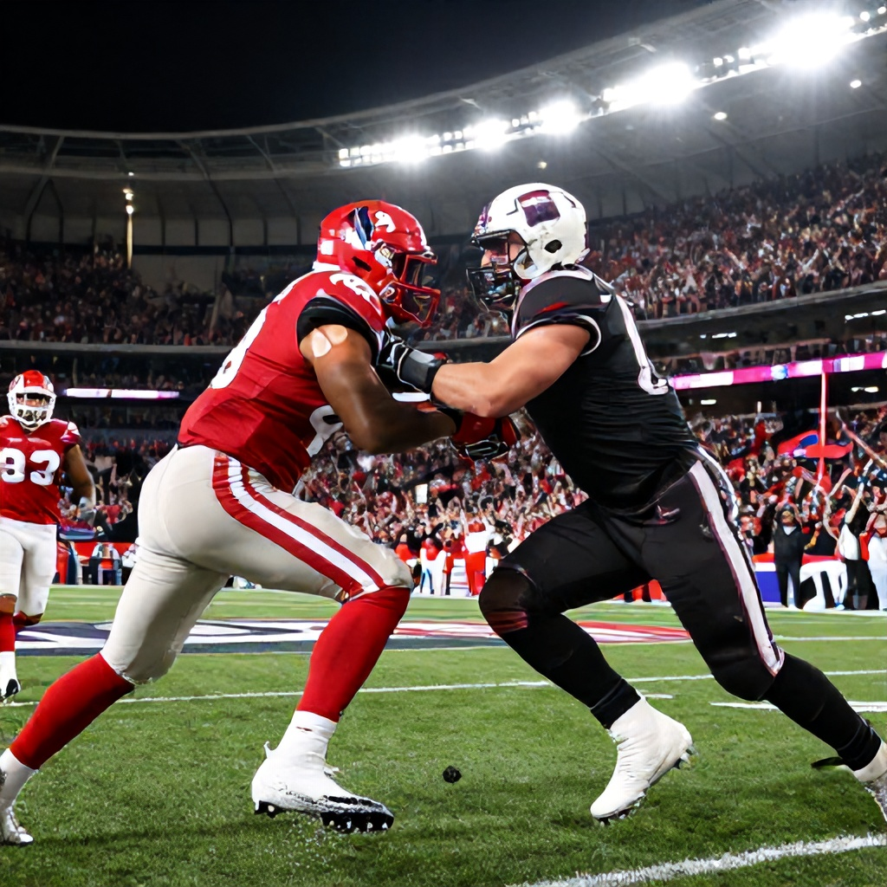

Lead
As the Canadian Football League kicks off its third week of the 2026 season, the spotlight turns to one of the most heated rivalries in the West Division: the Calgary Stampeders versus the Saskatchewan Roughriders. Scheduled for Saturday, June 20, 2026, at McMahon Stadium in Calgary, this matchup promises high-stakes football, intense competition, and a battle for supremacy in the Western Conference.
The Rivalry
The Stampeders and Roughriders have a long-standing rivalry rooted in their geographic proximity and competitive history. The two teams have faced off numerous times throughout the years, with each victory adding to the lore of this storied contest. This year’s matchup comes at a pivotal time in both teams' seasons, with both squads looking to establish themselves as serious contenders for the playoffs.
Calgary enters the game with a strong home-field advantage, as McMahon Stadium has been a fortress for the Stampeders in recent seasons. Their defensive prowess and powerful running game make them a formidable opponent on their home turf. Meanwhile, Saskatchewan brings an aggressive offensive identity and a resilient spirit that has defined their approach under head coach Chris Jones.
Early Season Context
This is the first meeting of the 2026 campaign between these two clubs. Both teams are still finding their rhythm after a challenging offseason, but they have shown glimpses of potential in their early performances. Calgary’s offense, led by veteran quarterback Henry Burris, has displayed improved chemistry, while Saskatchewan’s defense has been a key strength in their opening games.
Betting Angle
While specific odds for the Calgary vs. Saskatchewan game are not yet available, the matchup is expected to draw significant interest among bettors due to its historical significance and competitive balance. As both teams aim to build momentum early in the season, the game could see a tight contest with a low-scoring affair or a high-powered shootout depending on how well each team executes its game plan.
Bettors should watch for any developments in the betting lines once they are released, particularly in terms of moneyline and total bets. Given the evenly matched nature of the teams and the importance of the venue, this game could offer value in either a spread or over/under bet once the lines stabilize.
Conclusion
With the stakes high and the rivalry intense, the Calgary Stampeders vs. Saskatchewan Roughriders showdown promises to be a thrilling addition to CFL Week 3. Fans can expect a hard-fought battle filled with strategy, skill, and heart. Whether you're backing the home team or looking for value in the betting market, this game is one to keep an eye on as the season progresses.